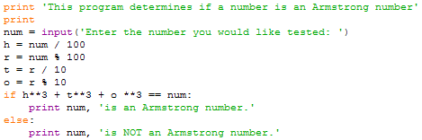
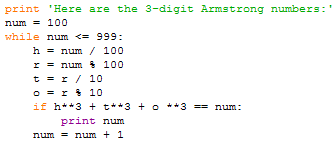
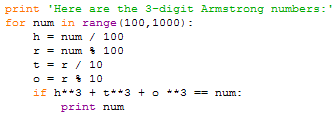
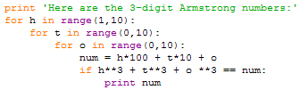

Recall from the previous assignment that "An Armstrong number is an n-digit number that is equal to the sum of its digits each raised to the nth power. For example 153 equals 13+53+33, so it is an Armstrong number." On that assignment you wrote a program to determine if a given number was an Armstrong number. Now we'd like to write a program that displays all the 3-digit Armstrong numbers.
Our general approach will be to test each 3-digit number, that is every number from 100 to 999, to see if it is an Armstrong number. If it is we'll display it, and if it isn't we'll just move on to the next number.
This can be expressed in pseudocode as,
for each number from 100 to 999
if it is an Armstrong number
display it
You should have some Armstrong number detecting code from Assignment 3 that looks something like this,

All we need to do is to remove the I/O (input and output) from this code and place the remainder inside a loop. Doing so gives us this using a while loop,

or this using a for loop,

This program can be structured differently to avoid having to take apart the number in each loop iteration. The key to the restructuring is to use three nested loops. Each loop generates one of the three digits. Since the innermost loop iterates fastest, and the outer loop slowest the result is to check every combination of the three digits. (Try inserting a print inside the innermost loop to verify this). The resulting program might look like this,

Note that instead of breaking apart the number, this time we have to build it up for testing and displaying, so while this is a different approach it is not a markedly better one. It is a good reminder though that even very short and simple programs can often be written in many ways and that unless you have considered several ways you may be missing a better way.